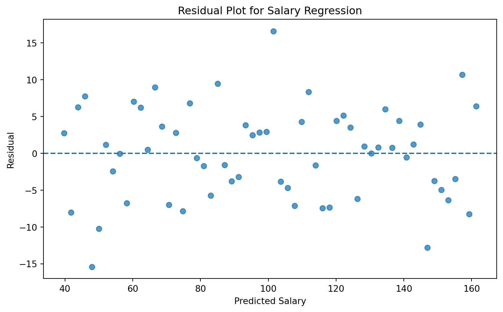
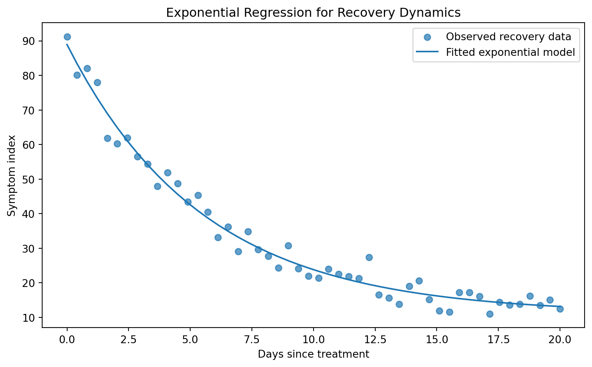

Regression analysis is one of the foundational methods of supervised machine learning and statistical modeling. Its central purpose is to model the relationship a set of input variables and a continuous-valued output variable. In the language of machine learning, the inputs are called features, predictors, or independent variables, while the output is called the target, response, or dependent variable.
At the most general level, regression attempts to learn an unknown function \[
f:\mathcal X \to \mathbb R
\] where \(\mathcal X\) is the input space and \(\mathbb R\) is the set of real-valued outputs. Given training data \[
\mathcal D_n=\{(x_i, y_i)\}_{i=1}^{n}
\] where \(x_i\in \mathcal X\) and \(y_i\in \mathbb R\), the goal is to construct a predictor \(\hat f\) such that, for a new input \(x_\text{new}\), the prediction \[
\hat y_{\text{new}}=\hat f (x_\text{new})
\] is close to the unknown true response \(y_\text{new}\).
Regression is used for both explanation and prediction. When used for explanation, regression helps quantify how changes in predictors are associated with changes in the response. When used for prediction, regression is evaluated by how accurately it estimates future or unseen values. These purposes places regression at the intersection of statistics, machine learning, and scientific modeling.
The statistical learning literature treats regression as a central supervised learning problem, especially under squared-error loss, linear models, regularization, and flexible nonlinear extensions. Hastie, Tibshirani, and Friedman describe linear methods, shrinkage methods, and model assessment as core components of supervised learning1, while Bishop presents regression as one of the basic settings for probabilistic pattern recognition and machine learning2.
1. Regression as a Supervised Learning Problem
1.1. The Data-Generating View
We assume that (by our belief) the observed data are generated by an unknown relationship with some noise: \[
Y = f(X) + \epsilon,\qquad \mathbb E[\epsilon|X]=0
\] Here:
\(X\) is the random input vector,
\(Y\) is the random response,
\(f(X)\) is the systematic component,
\(\epsilon\) is the random noise or irreducible error.
We assume \(\mathbb E[\epsilon | X]=0\), which means, after conditioning on the input \(X\), the noise has no systematic direction. It may still vary, but it does not consistently push the response upward or downward.
The central objective of regression is to approximate \(f\), not to recover the noise \(\epsilon\) (or get rid of it). Even the best possible predictor cannot remove irreducible randomness from the problem.
1.2. Loss Functions and Expected Risk
To define what it means for a prediction to be good, we introduce a loss function\[
\ell(y, \hat y)
\] which measures the penalty for predicting \(\hat y\) when the true value is \(y\).
For regression, the most common loss is the squared loss.
NoteDefinition: Squared loss
\[
\ell(y, \hat y)= (y-\hat y)^2
\]
The theoretical goal is to find a predictor \(g\) the minimizes the expected risk: \[
R(g) = \mathbb E[\ell(Y, g(x))]
\] Under squared loss, the idea predictor is therefore \[
g^* =\arg \min_g \mathbb E[(Y-g(X))^2]
\]
1.3. The Bayes Predictor
For squared loss, the optimal predictor is the conditional expectation: \[
f^*(x) = \mathbb E[Y|X=x]
\] This result can be derived as if the objective is to minimize mean square prediction error, then the best possible prediction at a point \(x\) is the average value \(Y\) among all cases with \(X= x\).
NoteProof
For any fixed \(x\), consider choosing a number \(a\) to minimize \[
\mathbb E [(Y-a)^2|X=x]
\] Expand: \[
\mathbb E [(Y-a)^2|X=x] = \mathbb E[Y^2-2aY+a^2 | X=x]
\] Because \(a\) is a constant conditional on \(X=x\), \[
= \mathbb E[Y^2|X=x] - 2a\mathbb E[Y|X=x] + a^2
\] Differentiated with respect to \(a\): \[
\frac{d}{da}[\mathbb E[Y^2|X=x] - 2a\mathbb E[Y|X=x] + a^2]=-2\mathbb E[Y|X=x] + 2a
\] Set the derivative equal to zero, we have \[
-2\mathbb E[Y|X=x] + 2a = 0 \implies a = \mathbb E[Y|X=x]
\] Therefore \(f^*(x)=\mathbb E[Y|X=x]\).
2. Empirical Risk Minimization
In practice, the true distribution of \((X,Y)\) is unknown. Therefore, the expected risk\(R(g)\) cannot be minimized directly. Instead, we use the observed training sample and minimize the empirical risk: \[
\hat R_n(g)=\frac{1}{n}\sum_{i=1}^n \ell(y_i, g(x_i))
\] For squared loss, \[
\hat R_n(g) = \frac{1}{n}\sum_{i=1}^n (y_i-g(x_i))^2
\] The empirical risk minimization problem is \[
\hat g=\arg \min_{g\in \mathcal G}\frac{1}{n}\sum_{i=1}^n(y_i-g(x_i))^2
\] where \(\mathcal G\) is a chosen class of candidate functions.
TipTip
The choice of \(\mathcal G\) matters. If \(\mathcal G\) is too simple, the model may underfit. If \(\mathcal G\) is too flexible, the model may overfit.
3. Ordinary Least Squares Regression
3.1. Model Specification
The most classical regression model is ordinary least squares, or OLS regression. In its linear form, OLS assumes that the prediction is an affine function of the input variables: \[
\hat y=\beta_0+\beta_1x_{i1}+\beta_2x_{i2}+\dots+ \beta_dx_{id}
\] Using vector notation, define \[
\tilde x_i =\begin{bmatrix}1\\x_{i1}\\x_{i2}\\\vdots \\ x_{id}\end{bmatrix}, \qquad \theta = \begin{bmatrix}\beta_0\\\beta_1 \\\beta_2\\\vdots\\ \beta_d \end{bmatrix}
\] Then \[
\hat y_i = \tilde x_i^\top \theta
\] For all \(n\) observations, define the design matrix \[
\Phi = \begin{bmatrix}
1 & x_{11} & x_{12} & \cdots & x_{1d}\\
1 & x_{21} & x_{22} & \cdots & x_{2d}\\
\vdots & \vdots & \vdots & \ddots & \vdots\\
1 & x_{n1} & x_{n2} & \cdots & x_{nd}
\end{bmatrix}
\] Then the vector of prediction is \[
\hat y = \Phi \theta
\] The linear regression model is \[
y = \Phi \theta +\epsilon
\]
3.2. Least Squares Objective
OLS estimates \(\theta\) by minimizing the sum of squared errors: \[
SSE(\theta)=\sum_{i=1}^n(y_i-\hat y_i)^2.
\] In matrix notation, \[
SSE(\theta)= ||y-\Phi\theta||_2^2
\] The OLS optimization problem is \[
\hat \theta_{OLS}=\arg\min_\theta ||y -\Phi\theta||_2^2 \sim \underbrace{\arg\min_\theta\frac{1}{n}||y-\Phi\theta||_2^2}_{\text{using the mean squared error}}
\] The factor \(\frac{1}{n}\) does not change the minimizer.
3.3. Closed-Form Solution
To derive the OLS solution, we define \[
J(\theta)=||y-\Phi\theta||_2^2
\] Expand: \[
J(\theta)=(y-\Phi\theta)^\top (y-\Phi\theta)=y^\top y-2\theta^\top\Phi^\top y + \theta^\top \Phi^\top \Phi\theta
\] Differentiate with respect to \(\theta\): \[
\nabla_\theta J(\theta)=-2\Phi^\top y+2\Phi^\top \Phi\theta
\] Set the gradient equal to zero: \[
-2\Phi^\top y+2\Phi^\top \Phi\theta=0\implies \Phi^\top\Phi\theta=\Phi^\top y
\] These are called the normal equations.
If \(\Phi^\top \Phi\) is invertible, then \[
\hat \theta_{OLS} = (\Phi^\top\Phi)^{-1}\Phi^\top y
\] The matrix \(\Phi^\top\Phi\) is often called the Gram matrix. Invertibility requires that the columns of \(\Phi\) be linearly independent. If the columns are linearly dependent, or if \(d+1>n\), then \(\Phi^\top \Phi\) is singular and the ordinary inverse does not exist.
4. Probabilistic Interpretation of OLS
OLS can also be derived from maximum likelihood estimation.
Assume the model \[
y_i = \tilde x_i^\top\theta +\epsilon_i,
\] where \[
\varepsilon_i \overset{iid}{\sim} \mathcal N(0,\sigma^2)
\] Then \[
Y_i|X_i = x_i \sim \mathcal N(\tilde x_i^\top\theta, \sigma^2)
\] The likelihood is: \[
L(\theta, \sigma^2)=\prod_{i=1}^n \frac{1}{\sqrt{2\pi\sigma^2}}\exp\left(-\frac{(y_i-\tilde x_i^\top \theta)^2}{2\sigma^2}\right)
\]
The log-likelihood is \[
\ell(\theta,\sigma^2)=-\frac{n}{2}\log(2\pi)-\frac{n}{2}\log(\sigma^2)-\frac{1}{2\sigma^2}\sum_{i=1}^n(y_i-\tilde x_i^\top\theta)^2.
\] For fixed \(\sigma^2\), maximizing the log-likelihood with respect to \(\theta\) is equivalent to minimizing \[
\sum_{i=1}^n(y_i-\tilde x_i^\top\theta)^2.
\] Therefore, under independent Gaussian noise, the OLS estimator is also the maximum likelihood estimator: \[
\hat \theta_{MLE}=\hat \theta_{OLS}
\]
TipExample 1: Salary as a Function of Experience
A simple example is the relationship between work experience and salary. Suppose salary is measured in thousand of dollars and experience is measured in years. A simple linear model may be written as: \[
\text{Salary}_i = \beta_0 + \beta_1 \times\text{ Experience}_i+\epsilon_i
\] If the fitted model is \[
\hat{\text{Salary}} = 40 + 8 \times \text{Experience}
\] then:
\(\hat \beta_0 = 40\) means the predicted salary at zero year of experience is $40,000.
\(\hat \beta_1 = 8\) means each additional year of experience is associated with an $8,000 increase in predicted salary.
This interpretation is conditional on the model and data. It does not automatically prove that one more year experience causes salary to increase by $8,000. Causal interpretation requires additional assumptions.
For each observation, the residual is\[
e_i = y_i - \hat y_i
\]In vector form,\[
e = y - \hat y = y - \Phi \hat \theta
\]
Residuals estimate the unexplained part of the response after fitting the model.
A residual plot is one of the most important diagnostic tools in regression. If a linear model is appropriate, the residuals should generally appear randomly scattered around zero. Systematic structure in residuals indicates that the model has failed to capture some pattern.
5.2. Common Residual Patterns
Residual Pattern
Meaning
Random cloud around zero
Linear model may be adequate
Curved pattern
Nonlinear relationship omitted
Funnel shape
Nonconstant variance, or heteroskedasticity
Clusters
Missing group structure
Extreme points
Possible outliers or influential observations
Time pattern
Autocorrelation or temporal dependence
Show code
# Continuing from the salary exampledf["predicted_salary"] = model.predict(X)df["residual"] = df["salary"] - df["predicted_salary"]plt.figure(figsize=(8, 5))plt.scatter(df["predicted_salary"], df["residual"], alpha=0.75)plt.axhline(0, linestyle="--")plt.title("Residual Plot for Salary Regression")plt.xlabel("Predicted Salary")plt.ylabel("Residual")plt.tight_layout()plt.show()

Figure 2: Residual plot for the salary regression example
6. Nonlinear Structure and Polynomial Regression
Linear regression is linear in the coefficients, not necessarily in the original input. If the relationship between \(x\) and \(y\) is curved, we can transform the input using basis functions:
\[
\phi(x) = \begin{bmatrix}1 \\ x \\ x^2 \\x^3 \\ \vdots \\ x^p\end{bmatrix}
\] Then the model becomes \[
\hat y = \theta_0 + \theta_1x + \theta_2 x^2 +\cdots +\theta_p x^p
\] This is called polynomial regression. It is nonlinear in \(x\), but linear in \(\theta\). Therefore, it can still be estimated using least squares.
More generally, with basis functions \(\phi_1, \dots, \phi_m\), the model is \[
\hat f(x)=\sum_{j=1}^m \theta_j \phi_j(x).
\]
TipExample: Curved Relationship
Suppose the true relationship is approximately quadratic: \[
y = 2 + 3x - 0.5x^2 +\epsilon
\] A simple linear model may underfit, while a quadratic model may capture the structure.
Figure 3: Linear regression compared with a quadratic polynomial fit
7. Overfitting, Underfitting, and Model Complexity
Regression models must balance two sources of error:
Approximation error: error because the model class is too simple.
Estimation error: error because the model is too flexible relative to the data.
A low-degree polynomial may underfit. A very high-degree polynomial may overfit. The goal is not to minimize training error alone, but to minimize generalization error.
the Gram matrix \(\Phi^\top \Phi\) is nearly singular.
Regularization addresses this by adding a penalty term to the objective function. Instead of minimizing training error alone, we minimize loss and penalty. The purpose is to control model capacity and improve generalization.
8.1. Ridge Regression
8.1.1. Ridge Objective
Ridge regression adds an \(L_2\) penalty to the least squares objective: \[
\hat \theta_{\text{ridge}}=\arg\min_\theta \left[\frac{1}{n}||y-\Phi\theta||^2_2 + \lambda ||\theta||_2^2\right],
\] where \[
||\theta||_2^2 = \sum_{j=1}^d \theta_j^2.
\] The tuning parameter \(\lambda\geq 0\) controls the strength of regularization.
If \(\lambda=0\), ridge reduces to OLS.
If \(\lambda\) is large, coefficients are strongly shrunk toward zero.
Usually, the intercept is not penalized.
8.1.2. Ridge Closed-Form Solution
Ignoring the intercept penalty for simplicity, the ridge objective can be written as \[
J(\theta)= ||y-\Phi\theta||_2^2 + \lambda||\theta||_2^2
\] Expanding, \[
J(\theta)=(y-\Phi\theta)^\top(y-\Phi\theta)+\lambda\theta^\top\theta
\] Differentiate: \[
\nabla_\theta J(\theta)=-2\Phi^\top y +2\Phi^\top\Phi\theta + 2\lambda\theta
\] Set equal to zero: \[
-2\Phi^\top y + 2\Phi^\top\Phi\theta + 2\lambda\theta = 0 \implies (\Phi^\top\Phi + \lambda I)\theta = \Phi^\top y
\] Thus, \[
\hat \theta_{\text{ridge}} = (\Phi^\top\Phi+\lambda I)^{-1}\Phi^\top y
\] The key advantage is that even if \(\Phi^\top\Phi\) is singular, the matrix \[
\Phi^\top\Phi+\lambda I
\] is invertible for \(\lambda>0\), assuming standard conditions.
8.1.3. Bayesian Interpretation of Ridge
Ridge regression also has a Bayesian interpretation. Suppose \[
y|\theta \sim \mathcal N(\Phi\theta, \sigma^2 I)
\] and place a Gaussian prior on the coefficients: \[
\theta\sim \mathcal N(0, \tau^2I)
\] The posterior is proportional to \[
p(\theta|y)\propto p(y|\theta)p(\theta).
\] Taking the negative log-posterior gives \[
\frac{1}{2\sigma^2}||y-\Phi\theta||_2^2 + \frac{1}{2\tau^2}||\theta||_2^2 + C
\] Minimizing this expression is equivalent to ridge regression with \[
\lambda = \frac{\sigma^2}{\tau^2}
\] Thus, ridge can be interpreted as maximum a posteriori estimation under a Gaussian prior. Bayesian linear regression and its connection to regularized least squares are a topic in probabilistic machine learning treatments.
8.2. Lasso Regression
8.2.1. Lasso Objective
Lasso regression uses an \(L_1\) penalty: \[
\hat \theta_{\text{lasso}} = \arg \min_\theta \left[\frac{1}{n}||y-\Phi\theta||_2^2 +\lambda||\theta||_1\right],
\] where \[
||\theta||_1 = \sum_{j=1}^d||\theta_j||.
\] The \(L_1\) penalty encourages sparsity. That means some coefficients can be estimated as exactly zero: \[
\hat \theta_j = 0 \qquad\text{ for some predictors }j
\] This makes lasso useful for automatic variable selection.
8.2.2. Geometry of Ridge and Lasso
The difference between ridge and lasso can be understood geometrically. Ridge constrains coefficients inside an \(L_2\) ball: \[
\sum_{j=1}^d \theta_j^2 \leq t.
\] Lasso constrains coefficients inside an \(L_1\) ball: \[
\sum_{j=1}^d|\theta_j| \leq t.
\] In two dimensions, the \(L_2\) constraint is circular, while the \(L_1\) constraint is diamond-shaped. The corners of the \(L_1\) diamond lie on the coordinate axes, making it more likely that the optimum occurs where one coefficient is exactly zero.
Figure 5: Geometry of ridge and lasso constraint regions
8.3. Elastic Net Regression
Ridge handles correlated predictors well but does not perform hard feature selection. Lasso performs feature selection but can behave unstably when predictors are highly correlated. Elastic net combines both penalties: \[
\hat \theta_{EN}=\arg\min\left[\frac{1}{n}||y-\Phi\theta||_2^2+\lambda_1||\theta||_1 + \lambda_2 ||\theta||_2^2\right].
\] An equivalent parameterization is \[
\frac{1}{n}||y-\Phi\theta||_2^2 + \lambda[\alpha||\theta||_1 + (1-\alpha)||\theta||_2^2],
\] where \(0\leq \alpha \leq 1\).
\(\alpha=1\) gives lasso.
\(\alpha=0\) gives ridge.
\(0<\alpha<1\) gives elastic net.
Elastic net is especially useful when many predictors are correlated and sparse selection is still desired.
TipExample: Finance Regression with Multiple Predictors
In finance or business forecasting, the target may be quarterly sales: \[
Y_i = \text{ Sales}_i
\] Predictors may include: \[
x_{i1} = \text{ interest rate, } x_{i2} = \text{ unemployment rate, } x_{i3} = \text{ GDP, } x_{i4}= \text{ advertising spend}
\] A multiple linear regression model is \[
\text{Sales}_i = \beta_0 +\beta_1 x_{i1} + \beta_2 x_{i2} + \beta_3 x_{i3} + \beta_4 x_{i4}+\epsilon_i
\] If predictors are correlated, such as GDP growth and unemployment, ridge or elastic net may provide more stable estimates than OLS.
Figure 6: Coefficient comparison across OLS, ridge, and lasso
9. Gradient Descent for Regression
OLS has a closed-form solution, but many regression problems do not. When the model is large, nonlinear, regularized, or fitted to massive datasets, iterative optimization methods are often used.
The most common optimization method is gradient descent.
Let the objective be \[
J(\theta)=\frac{1}{n}\sum_{i=1}^n(y_i-\tilde x_i^\top \theta)^2.
\] The gradient is \[
\nabla_\theta J(\theta)= -\frac{2}{n}\Phi^\top(y-\Phi\theta)
\] Gradient descent updates parameters by moving in the negative gradient direction: \[
\theta^{(t+1)}=\theta^{(t)}-\alpha\nabla_\theta J(\theta^{(t)}),
\] where \(\alpha>0\) is the learning rate.
Substituting the gradient: \[
\theta^{(t+1)}=\theta^{(t)}+\frac{2\alpha}{n}\Phi^\top(y-\Phi\theta^{(t)}).
\] If \(\alpha\) is too small, convergence is slow. If \(\alpha\) is too large, the algorithm may diverge.
Figure 7: Gradient descent loss curve for linear regression
Estimated parameters: [0.70824809 2.36049641]
10. Regression Performance Metrics
Regression evaluate measures how close predictions \(\hat y_i\) are to observed values \(y_i\).
Let \[
e_i=y_i-\hat{y}_i.
\] The residual \(e_i\) is the basic error unit.
NoteDefinition: Mean Squared Error
The mean squared error is \[
MSE = \frac{1}{n}\sum_{i=1}^n (y_i-\hat y_i)^2
\]
MSE penalizes large errors strongly because errors are squared.
NoteDefinition: Root Mean Squared Error
The root mean squared error is \[
RMSE = \sqrt{\frac{1}{n}\sum_{i=1}^n(y_i-\hat{y}_i)^2}
\]
RMSE is in the same unit as the target variable.
NoteDefinition: Mean Absolute Error
The mean absolute error is \[
MAE = \frac{1}{n} \sum_{i=1}^n |y_i-\hat y_i|
\]
MAE is more robust to outliers than MSE because it does not square the residuals.
NoteDefinition: Coefficient of Determination
The coefficient of determination is \[
R^2 = 1-\frac{\sum_{i=1}^n (y_i-\hat y_i)^2}{\sum_{i=1}^n(y_i-\overline y)^2}
\] where \[
\overline y = \frac{1}{n}\sum_{i=1}^n y_i
\] The denominator is the total sum of squares: \[
SST = \sum_{i=1}^n (y_i-\overline y)^2.
\] The numerator is the residual sum of squares: \[
SSE = \sum_{i=1}^n (y_i - \hat y_i)^2
\] Thus, \[
R^2 = 1 -\frac{SSE}{SST}.
\]
An \(R^2\) value close to 1 indicates that the model explains a large proportion of the variation in the response. However, high \(R^2\) does not guarantee causal validity, fairness, robustness, or out-of-sample performance.
Some regression problems are better modeled with nonlinear functional forms motivated by domain knowledge.
Suppose a hospital tracks a patient recovery index over time. A simple model may assume exponential recovery or decay: \[
\text{Recovery}(t)=Ae^{-kt}+ C,
\] where:
\(A\) controls initial recovery distance,
\(k>0\) controls recovery rate,
\(C\) is the long-term baseline.
If the measured variable is symptom burden rather than recovery, an exponential decay model may be appropriate: \[
\text{Symptom}(t)=Ae^{-kt}+\epsilon.
\] This model has an important property: \[
Ae^{-kt}>0
\] for \(A>0\), which keeps predictions positive.
Show code
import numpy as npimport matplotlib.pyplot as pltfrom scipy.optimize import curve_fitrng = np.random.default_rng(42)def exp_decay(t, A, k, C):return A * np.exp(-k * t) + Ct = np.linspace(0, 20, 50)true_y = exp_decay(t, A=80, k=0.18, C=10)observed_y = true_y + rng.normal(0, 4, size=len(t))params, _ = curve_fit(exp_decay, t, observed_y, p0=[70, 0.1, 5])fitted_y = exp_decay(t, *params)plt.figure(figsize=(8, 5))plt.scatter(t, observed_y, alpha=0.7, label="Observed recovery data")plt.plot(t, fitted_y, label="Fitted exponential model")plt.title("Exponential Regression for Recovery Dynamics")plt.xlabel("Days since treatment")plt.ylabel("Symptom index")plt.legend()plt.tight_layout()plt.show()print("Estimated A, k, C:", params)

Figure 9: Exponential regression for recovery dynamics
Estimated A, k, C: [77.88582361 0.18102926 11.0525079 ]
11.2. Meteorology: Rainfall Regression
Meteorological regression may use multiple atmospheric predictors: \[
\text{Rainfall}_i = \beta_0 + \beta_1\text{Temperature}_i+\beta_2\text{Pressure}_i + \beta_3 \text{Windspeed}_i + \beta_4\text{Humidity}_i + \epsilon_i
\] Rainfall prediction may be difficult because the response is nonnegative, skewed, and often zero-inflated. A simple linear model may produce negative predictions, which are physically impossible.
Possible alternatives include: \[
\log (\text{Rainfall}_i+1) = \beta_0 + \beta^\top x_i + \epsilon_i
\] or generalized models designed for nonnegative outcomes.
Figure 10: Observed versus predicted rainfall and residual diagnostics
12. Logistic Regression
Although logistic regression is commonly used for classification rather than continuous regression, it belongs mathematically to the regression family because it models a transformed conditional probability.
For binary classification, \[
Y\in \{0,1\}
\] Logistic regression models \[
P(Y=1|X=x) = \sigma (\theta^\top x),
\] where the sigmoid function is \[
\sigma(z) = \frac{1}{1+e^{-z}}
\] The log-odds, or logit, is linear: \[
\log\left(\frac{P(Y=1|X=x)}{1-P(Y=1|X=x)}\right)=\theta^\top x
\] The output is not a continuous target in the same sense as OLS regression. Instead, logistic regression predicts a probability in \((0,1)\).
The likelihood for binary labels is \[
L(\theta) = \prod_{i=1}^n p_i^{y_i} (1-p_i)^{(1-y_i)},
\] where \[
p_i = \sigma(\theta^\top x_i)
\] The negative log-likelihood is \[
-\ell(\theta)=-\sum_{i=1}^n\left[y_i\log p_i+ (1-y_i)\log (1-p_i)\right]
\] This is also called binary cross-entropy loss.
Regression analysis is the first major modeling paradigm in supervised machine learning because it formalizes one of the most common scientific questions: how does a quantitative outcome change as a function of observed inputs?
Mathematically, regression begins with the estimate of an unknown function \[
f:\mathcal X \to \mathbb R
\] Under squared loss, the ideal target is the Bayes predictor: \[
f^*(x)=\mathbb E[Y|X=x]
\] Because this function is unknown, we first choose a model class, then estimate parameters by empirical risk minimization, evaluates predictive performance, and diagnoses model adequacy through residual analysis.
Hastie, Trevor, Robert Tibshirani, and Jerome Friedman. The Elements of Statistical Learning. Springer Series in Statistics. Springer, 2009. https://doi.org/10.1007/978-0-387-84858-7.↩︎
Bishop, Christopher M. Pattern Recognition and Machine Learning. Information Science and Statistics. Springer, 2006.↩︎